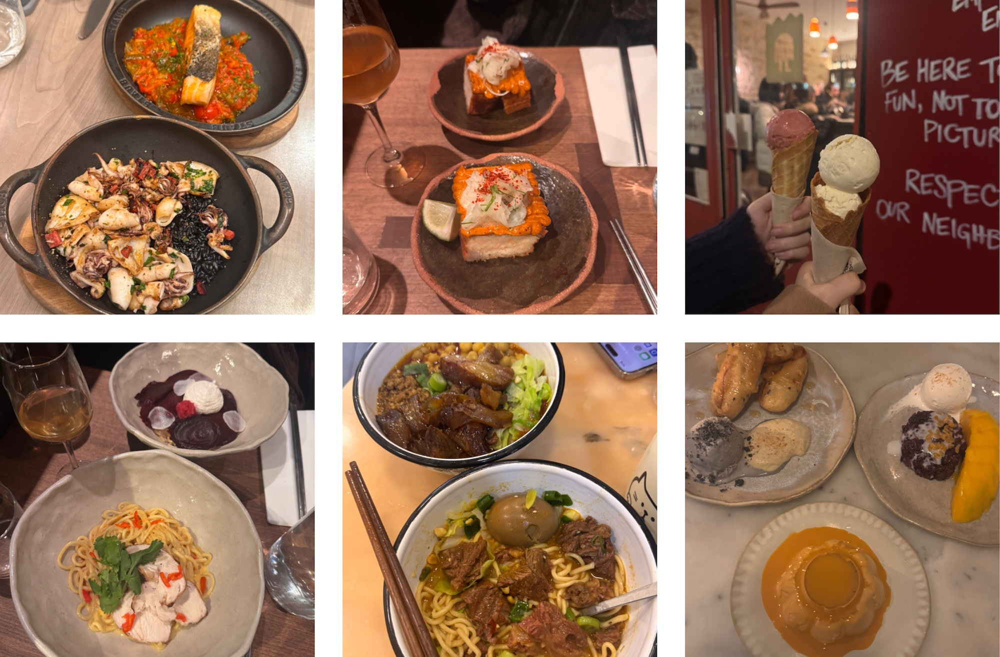

French Bakery
Carré Pain de Mie
Try: Carré (Japenese style toast)
See Maps →
Try: Carré (Japenese style toast)
See Maps →Try: Sorbet prune lovita and cornbread gelato
See Maps →Try: Any small plate. Everything is great!
See Maps →Try: Unadon
See Maps →Try: All the adds-on for the noodle are fantastic!
See Maps →Try: shrimp toast and the noodle
See Maps →Try: All is good!
See Maps →Try: Onion soup and red wine beef
See Maps →Try: Squid ink risotto and panna cotta
See Maps →Try: Sesame Butter Croissant
See Maps →